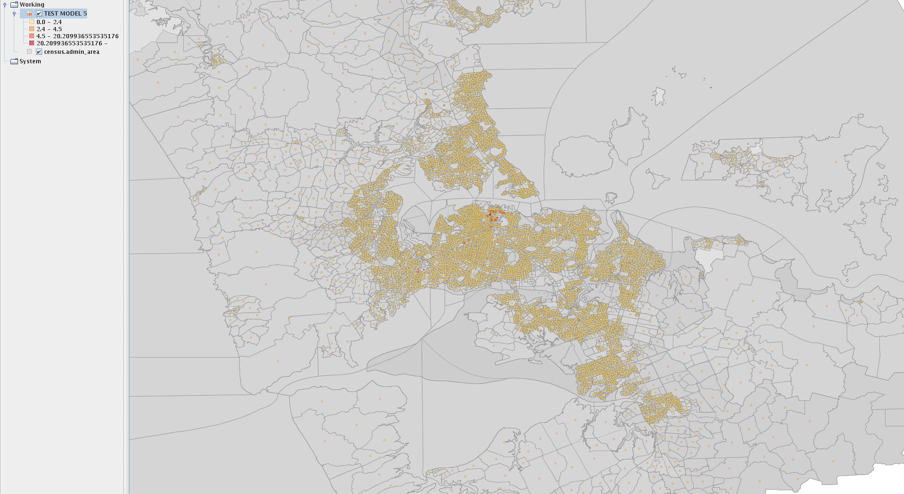

Modelling energy intensity
The energy intensity database schema in TOTUS has been designed to facilitate deriving energy intensity from one or more demographic variables. It contains meta data about the definition of a modelling equation and the energy intensity output of the model run. Two
Define an energy intensity derivation (model)
Energy intensity is modelled by performing a set of operations on one or more demographic statistics.
Census class codes
The census database schema in TOTUS holds demographic data for a set of topics each with their own categories. Each category consist of one or more classes, each of which may be assigned a count per meshblock area. Each part of an energy equation is derived from one such class instance, eg. to find all household demographic classes
SELECT t.code AS topic,
c.description AS category,
cc.description AS class
FROM census.topic AS t
JOIN census.category AS c
ON t.id = c.topic_id
JOIN census.class AS cc
ON c.id = cc.category_id
WHERE t.code = 'HOUSEHOLD'
ORDER BY t.id, c.id, cc.id
Now pick the census classes of interest and note their class code
SELECT * FROM census.class WHERE description IN ('Wood', 'No Fuels Used in this Dwelling');
id | category_id | code | description
----+-------------+-----------+--------------------------------
34 | 13 | W 34 | Wood
37 | 13 | NFUITD 37 | No Fuels Used in this Dwelling
NOTE: the examples used here are bogus
Scenario code
The energy schema allows user to define different model definitions, as in apply different coefficients or equation parts to the same census classes to model some scenario, eg. continual growth, current accounts, etc.
These scenario need to be defined prior to configuring a model and is currently done in the energy schema loader
SELECT * FROM energy.scenario; id | code | description ----+------------+------------------ 1 | CONTINUITY | Continuity 2 | CURRENT | Current accounts
TODO: add complete list
Activity code
Each energy intensity may be associated with a specific energy activity, eg. household heating. As with scenarios these are defined in the energy schema loader.
SELECT * FROM energy.activity; id | code | description ----+---------+------------------- 1 | HEATING | Household heating
TODO: add complete list
Run the stored procedure to configure the model
The model definition is setup using the energy.configure_model_run stored procedure, which has the following parameters:
- identifier (character varying): a unique model identifier, will be used to run the model afterwards
- description (text): a description of what the model's output mean
- activity (character varying(64)): identifier code for the energy activity to model intensity for
- scenario (character varying(64)): identifier code for the scenario applied in equation
- definition_parts (energy.definition_part[]): array (list) of definitions for the equation parts, this is a data structure with the following fields:
- census_class (character varying(32)): identifier code for the census class whose demographic data will be used in the intensity equation part
- equation (text): a simple or complex equation to run, must refer to the demographic field count (census.demographic.count), when specified the below coefficient will be ignored
- coefficient (numeric): coefficient to apply to demographic field count
Eg.
SELECT *
FROM energy.configure_model_run (
'TEST_MODEL_5',
'Test model 5',
'HEATING',
'CURRENT',
ARRAY [
('W 34', 'POW (count, 0.009)', 1)::energy.definition_part,
('NFUITD 37', '', 0.1)::energy.definition_part
]
);
Run an energy intensity model
The model run is facilitated by the database function energy.model_intesity. Choose the model to run and the census year data to use. model_intensity will store the output of the model in the energy.intensity table and return the results. If the requested model has run already its output is read from the database and returned.
SELECT * FROM energy.model_intensity ('TEST_MODEL_5'::VARCHAR, 2006::SMALLINT);
The above function call will generate and execute the following SQL if model has not been run already:
INSERT INTO energy.intensity (census_admin_area_id, model_definition_id, year, value)
SELECT admin_area_id,
model_definition_id,
year,
SUM (intensity_part) AS intensity
FROM (
SELECT p.model_definition_id,
d.admin_area_id,
d.year,
POW (count, 0.009) AS intensity_part
FROM energy.model_definition_part AS p
JOIN census.demographic AS d
ON p.census_class_id = d.class_id
WHERE p.model_definition_id = 6
AND p.part = 1
AND d.year = 2006
UNION ALL
SELECT p.model_definition_id,
d.admin_area_id,
d.year,
count * coefficient AS intensity_part
FROM energy.model_definition_part AS p
JOIN census.demographic AS d
ON p.census_class_id = d.class_id
WHERE p.model_definition_id = 6
AND p.part = 2
AND d.year = 2006
) AS m
GROUP BY model_definition_id, admin_area_id, year
Next it will retrieve the output of the model run (by identifier) and return energy.intensity records.
To use the ouput in a GIS perform the following query in preferred GIS:
SELECT m.id,
m.census_admin_area_id,
m.model_definition_id,
m.year,
m.value,
ST_AsBinary (ST_Centroid (a.geom)) AS geom
FROM energy.model_intensity ('TEST_MODEL_5'::VARCHAR, 2006::SMALLINT) AS m
JOIN census.admin_area AS a
ON m.census_admin_area_id = a.id

{kind=link}